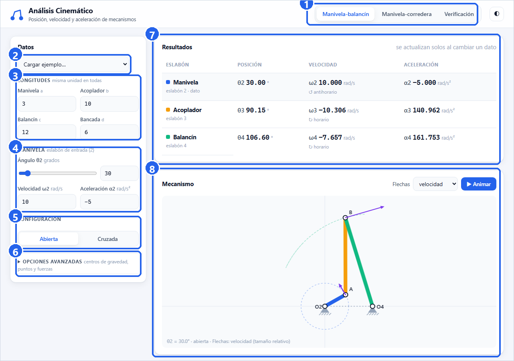
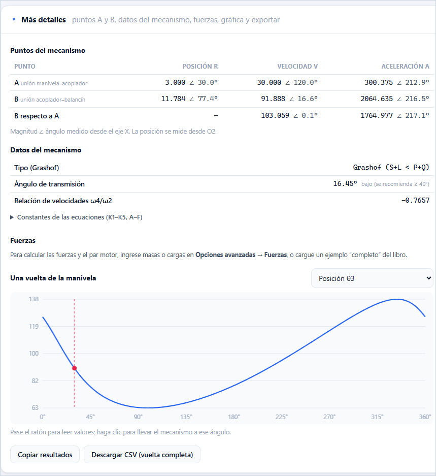
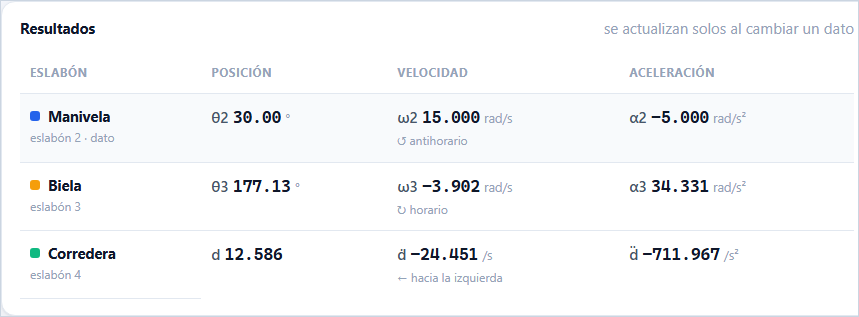

Cómo obtener la posición, la velocidad y la aceleración de los eslabones a partir de los datos de la manivela, en el mecanismo manivela-balancín (cuatro barras) y en el manivela-corredera.
En 30 segundos
Escriba las longitudes y los datos de la manivela (θ2, ω2, α2). La tabla Resultados muestra al instante la posición, la velocidad y la aceleración de cada eslabón. No hay botón de “calcular”: todo se actualiza mientras escribe.
1La pantalla

Figura 1. Pantalla principal. Al abrir la página ya trae un ejemplo cargado (datos de la Tabla P11-3, fila b, del Norton).
1Mecanismo: manivela-balancín, manivela-corredera o verificación con el libro.
2Cargar ejemplo: datos de clase o de las tablas del Norton.
3Longitudes de los eslabones (todas en la misma unidad).
4Manivela: ángulo θ2, velocidad ω2 y aceleración α2.
5Configuración: abierta o cruzada (las dos formas de armarlo).
6Opciones avanzadas: solo si necesita centros de gravedad, puntos o fuerzas.
7Resultados: lo que se busca, en una sola tabla.
8Mecanismo: el dibujo en la posición calculada.
2Paso a paso
Elija el mecanismo arriba (1).
Escriba las longitudes (3). En el manivela-balancín: manivela a, acoplador b, balancín c y bancada d (distancia entre los pivotes fijos).
Escriba los datos de la manivela (4): el ángulo θ2 en grados, la velocidad ω2 en rad/s y la aceleración α2 en rad/s². Positivo = antihorario.
Deje “Abierta” (5), salvo que su mecanismo esté armado cruzado.
Lea la tabla Resultados (7). Eso es todo.
3Cómo leer los resultados
La tabla tiene una fila por eslabón y tres columnas: posición, velocidad y aceleración.
Figura 2. Tabla de resultados del manivela-balancín.
Manivela (eslabón 2): es el dato que usted escribió; aparece como referencia.
Acoplador (eslabón 3) y balancín (eslabón 4): son los resultados calculados: θ3 y θ4 (posición), ω3 y ω4 (velocidad), α3 y α4 (aceleración).
Sentido de giro: debajo de cada velocidad dice si el eslabón gira en sentido ↺ antihorario (valor positivo) o ↻ horario (valor negativo).
Ángulos: se miden desde el eje X horizontal, en sentido antihorario, entre 0° y 360°.
¿Y los demás datos?
Al final de la página está el botón ▸ Más detalles. Al abrirlo aparecen las velocidades y aceleraciones de los puntos A y B, el tipo de mecanismo (Grashof), el ángulo de transmisión, las fuerzas (si se ingresaron masas), una gráfica de la vuelta completa y los botones para copiar o descargar los resultados.

Figura 3. Sección “Más detalles” abierta.
4“Cambio un dato y lo demás no cambia”
No todos los resultados dependen de todos los datos. Algunos deben quedar iguales:
Si cambio…
Posición (θ3, θ4)
Velocidad (ω3, ω4)
Aceleración (α3, α4)
Una longitud
cambia
cambia
cambia
El ángulo θ2
cambia
cambia
cambia
Abierta / cruzada
cambia
cambia
cambia
La velocidad ω2
no cambia
cambia
cambia
La aceleración α2
no cambia
no cambia
cambia
Opciones avanzadas
no cambia
no cambia
no cambia
¿Por qué?
La posición es pura geometría: solo depende de las longitudes y de θ2. La velocidad depende además de ω2, y la aceleración depende de ω2 y de α2. Si duplica ω2, se duplican ω3 y ω4, pero θ3 y θ4 siguen iguales. Es lo correcto.
Si aun así no ve cambios:
Recargue la página con Ctrl + F5 para tener la última versión.
Revise si el campo quedó con borde rojo: el número no es válido. Use punto decimal (2.5).
Lea el mensaje rojo bajo los datos, si aparece: el mecanismo no se puede armar con esas medidas en ese ángulo.
5Ejemplo resuelto: manivela-balancín
Son los datos que trae la página al abrirla (Norton, Tabla P11-3, fila b): manivela 3, acoplador 10, balancín 12, bancada 6, θ2 = 30°, ω2 = 10 rad/s, α2 = −5 rad/s², configuración abierta.
Eslabón
Posición
Velocidad
Aceleración
Acoplador (3) — programa
θ3 = 90.15°
ω3 = −10.306 rad/s
α3 = 140.962 rad/s²
Acoplador (3) — libro
90.15°
−10.31 rad/s
140.96 rad/s²
Balancín (4) — programa
θ4 = 106.60°
ω4 = −7.657 rad/s
α4 = 161.753 rad/s²
Balancín (4) — libro
106.60°
−7.66 rad/s
161.75 rad/s²
Los dos eslabones giran en sentido horario (ω negativo) en ese instante.
Pruébelo
Cambie θ2 de 30 a 60: la tabla pasa a θ3 = 69.41° y θ4 = 94.70°, con ω3 = −3.998 y ω4 = −0.957 rad/s. Cambie después ω2 de 10 a 20: θ3 y θ4 no cambian, mientras que ω3 y ω4 se duplican (−7.997 y −1.915 rad/s).
6Manivela-corredera
En la pestaña Manivela-corredera se escriben la manivela a, la biela b y el descentrado c (altura de la guía respecto a O2; 0 si la guía pasa por O2). La última fila de la tabla es la corredera: su posición d, su velocidad ḋ y su aceleración d̈, con la indicación de si se mueve hacia la derecha o hacia la izquierda.

Figura 4. Norton, Tabla P11-1, fila b: a = 3, b = 10, c = 1, θ2 = 30°, ω2 = 15 rad/s, α2 = −5 rad/s². El libro da θ3 = 177.13°, ω3 = −3.90 rad/s, α3 = 34.33 rad/s², velocidad de la corredera 24.45 hacia la izquierda y aceleración 711.97 hacia la izquierda.
θ3 cerca de 180° es correcto
El libro mide θ3 sobre la línea que va de la corredera hacia la manivela, que apunta hacia la izquierda.
7De dónde salen los números
Son las ecuaciones de Norton, Diseño de Maquinaria, 4a Ed., las mismas de las diapositivas del curso.
Manivela-balancín
K1 = d/a · K2 = d/c · K3 = (a² − b² + c² + d²)/(2ac) · K4 = d/b · K5 = (c² − d² − a² − b²)/(2ab)
A = cos θ2 − K1 − K2 cos θ2 + K3 · B = −2 sen θ2 · C = K1 − (K2 + 1) cos θ2 + K3
D = cos θ2 − K1 + K4 cos θ2 + K5 · E = −2 sen θ2 · F = K1 + (K4 − 1) cos θ2 + K5
θ4 = 2 arctan[(−B ∓ √(B² − 4AC)) / 2A] θ3 = 2 arctan[(−E ∓ √(E² − 4DF)) / 2D] (− abierta, + cruzada)
ω3 = (a ω2 / b) · sen(θ4 − θ2) / sen(θ3 − θ4) ω4 = (a ω2 / c) · sen(θ2 − θ3) / sen(θ4 − θ3)
α3 = (CD − AF)/(AE − BD) α4 = (CE − BF)/(AE − BD) (con los A…F de aceleración, ec. 7.12)
Manivela-corredera
θ3 = arcsen[−(a sen θ2 − c)/b] + π (abierta) d = a cos θ2 − b cos θ3
ω3 = (a/b) (cos θ2 / cos θ3) ω2 ḋ = −a ω2 sen θ2 + b ω3 sen θ3
α3 = (a α2 cos θ2 − a ω2² sen θ2 + b ω3² sen θ3) / (b cos θ3)
d̈ = −a α2 sen θ2 − a ω2² cos θ2 + b α3 sen θ3 + b ω3² cos θ3
Símbolos
Símbolo
Significado
Unidad
θ
Posición angular del eslabón, desde el eje X, antihorario positivo
grados
ω
Velocidad angular (+ antihoraria, − horaria)
rad/s
α
Aceleración angular
rad/s²
d, ḋ, d̈
Posición, velocidad y aceleración de la corredera (+ hacia la derecha)
longitud, /s, /s²
O2, O4, A, B
Pivotes fijos (O2, O4) y uniones manivela–acoplador (A) y acoplador–balancín o corredera (B)
¿El programa calcula bien?
La pestaña Verificación recalcula las 7 filas de las Tablas P11-1, P11-2 y P11-3 del libro: 127 de 133 valores coinciden exactamente y los otros 6 son erratas del libro, explicadas una por una.